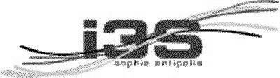
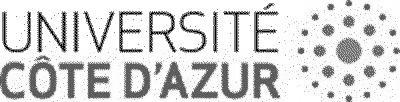
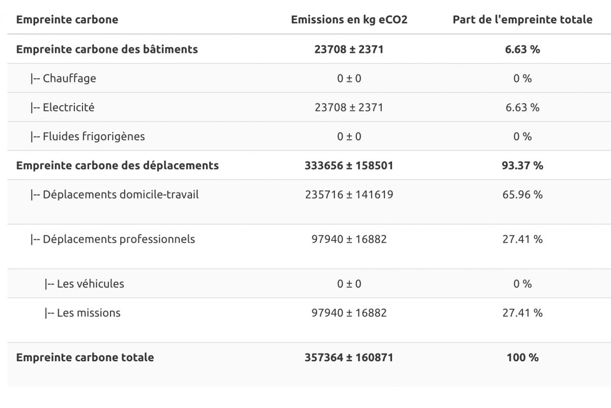

Notre premier bilan carbone au laboratoire est pour l'année 2019.
Nous avons utilisé l'outil proposé par Labo1point5, voir lien.
Commençons par lister quelques chiffres clefs et aussi quelques difficultés que nous avons rencontrées.
Chiffres clefs :
- Membres du laboratoire : 31 C, 99 E/C, 24 ITA, 68 Doct./Post Doc.
- 324 missions UCA ou CNRS cette année-là
- 70 déplacements domicile-travail, soit 32% de réponse. L'outil fait une règle de trois pour obtenir son estimation globale
- Surface Algorithmes : 2700 m2 et Templiers : 1800 m2.
difficultés :
- Inria Sophia Antipolis - Méditerranée n'a pas encore fait son bilan, mais il faudra se poser alors la question de ne pas comptabiliser deux fois les mêmes personnels et les mêmes missions
- Nous n'avons pas comptabilisé les missions des personnels INRIA ainsi que les missions des personnels UCA ou CNRS qui ont des missions payées sur des budgets gérés par INRIA.
- Les missions CNRS peuvent être téléversées avec l'outil de gestion Geslab qui s'interface désormais avec le BGES de Labo1point5, mais nous n'avons pas testé.
Il a fallu assigner à la main si la mission était faite en avion ou en voiture. - Pour les missions en avion, les étapes intermédiaires ne sont pas connues.
- Pour les voitures, le co-voiturage n'a pas été pris en compte
- La consommation électrique des Algorithmes est approximative et celle des Templiers inconnues. Nous avons donc calquée celle des Algorithmes sur les Templiers avec un facteur d'échelle.
- Nous n'avons pas d'information sur les liquides frigorigènes des climatisations.
Avec tous ces bémols, voici notre bilan pour 2019 :

Analyse :
- Ce qui domine est clairement les déplacements domicile-travail.
Même si on suppose une grosse erreur avec la non-intégration des missions côté INRIA , le coût des déplacements - domicile-travail reste un gros facteur, sans doute lié au faible développement des transports en commun dans la région.
- Le coût des bâtiments est faible car seule l'électricité est comptée et que celle-ci est faiblement carbonée en France, grâce ou à cause du parc nucléaire. Difficile d'estimer si les fluides frigorigènes changeraient la donne.
Action à court terme : au vu du poids des trajets domicile-travail et du fait que plusieurs membres du labo viennent en vélo électrique, nous avons mis en place la page Mobilité.